- 분석 표본
- 253,680명
22개 열 · 결측 0개
미국 성인 자기기입 설문 · 탐색 및 기초 모델링
22개 열 · 결측 0개
건강 · 생활 · 인구 특성
정상 86.1% · 약 6.2 : 1 불균형
80 : 20 층화 분할
고혈압 여부에 따른 설문 응답자의 당뇨 비율
고혈압 응답군의 당뇨 비율이 약 4.1배 높게 관찰되었습니다. 설문에서 관찰된 연관이며 인과를 뜻하지 않습니다.
테스트 데이터에서 HistGradientBoosting 평가
리콜 80% 운영점 · 임계값 0.498 · 정밀도 30.4% · 리콜 80.0%
정확도만으로 판단하지 않았습니다. 전부 정상으로 예측하는 기준선도 정확도 86.1%지만 당뇨 응답을 하나도 찾지 못합니다(리콜 0%).
모델 해석에서 BMI와 주관적 건강 상태가 주요 예측 신호로 나타났습니다. 연령대별 리콜은 18~29세 30.2%, 70세 이상 85.2%로 차이가 커 젊은 층의 사각지대를 별도로 살펴야 합니다.
자료는 2015년 미국 성인 전화 설문이며 건강 정보는 자기기입 응답입니다. 현재 인구나 다른 국가에 그대로 일반화할 수 없습니다.
이 모델은 프로젝트의 설문 기반 선별 분석 결과입니다. 개인 진단이나 치료 판단에 사용할 수 없으며, 양성 결과는 의료진 상담과 혈액검사 등으로 확인해야 합니다.
수치와 해석은 제공된 EDA · 모델링 · 인사이트 보고서에 기재된 범위로 한정했습니다.
데이터 출처: Kaggle Diabetes Health Indicators Dataset · 원자료: 미국 CDC BRFSS 2015년 조사.
지표 21개 + 타깃 1개
양성 클래스 35,346명
정상 : 당뇨
22개 열 전체
분석 대상과 전처리 결정
| 데이터 파일 | diabetes_binary_health_indicators_BRFSS2015.csv |
| 규모 | 253,680명 × 22열 (지표 21개 + 타깃 1개) |
| 타깃 | Diabetes_binary — 정상 86.1%, 당뇨 13.9% (약 6.2 : 1) |
| 변수 유형 | 연속형 3개(BMI, MentHlth, PhysHlth) · 이진 14개 · 코드형 4개(Age, GenHlth, Education, Income) |
| 수집 방식 | 미국 CDC BRFSS 2015 전화 설문, 자기기입 응답 |
| 결측 | 22개 열 전체에서 0개 |
| 단계 | 처리 | 근거 |
|---|---|---|
| 파일 선택 | 세 파일 중 기본 binary 파일 하나만 사용 | 같은 사람의 응답이 세 파일로 나뉘어 있어 섞으면 중복·누수 위험이 있음 |
| 결측치 | 대체·삭제하지 않음 | 22개 열 모두 결측 0개 |
| 중복 행 | 24,206행(9.5%) 유지 | 동일한 응답 조합을 제거하면 모집단 유병률 13.9%가 왜곡될 수 있음 |
| 코드 변수 | 값을 변환하지 않음 | Age · GenHlth · Education · Income은 연속형 실제 값이 아니라 구간 코드 |
| 이상치 | 제거하지 않음 | 고위험군의 실제 분포 꼬리를 보존 |
| 파생 변수 | 생성하지 않음 | 기초 EDA 단계로 원시 지표를 그대로 탐색 |
처리할 대상이 없었던 이유와 남긴 꼬리
253,680행 × 22열 전체에서 결측은 0개(0.0%)였습니다. 열별로도 0이라 평균 대체나 행 삭제 같은 개입이 필요하지 않았습니다.
응답 거부 코드(7/9 등)는 배포본에서 정리되어 있고, 코드 변수도 정의된 범위(Age 1~13, Education 1~6, Income 1~8, GenHlth 1~5) 안에 있어 암시적 결측이 없습니다.
IQR 1.5배 기준 점검 결과
| 변수 | 이상치 | 비율 | 해석 |
|---|---|---|---|
| BMI | 9,847개 | 3.9% | 주로 고도비만 쪽 꼬리 (최댓값 98) |
| MentHlth | 36,208개 | 14.3% | 한 달 내내 마음이 힘들다고 응답한 실제 값 |
| PhysHlth | 40,949개 | 16.1% | 한 달 내내 신체 불편을 겪은 응답 |
남긴 이유
지표별 당뇨율 비교
낮은 위험군높은 위험군
각 지표의 낮은 위험군과 높은 위험군 당뇨율입니다. 고콜레스테롤 보유군은 미보유군의 약 2.8배이며, 연령 코드가 높아질수록 상승하다 80세 이상에서 다소 낮아집니다.

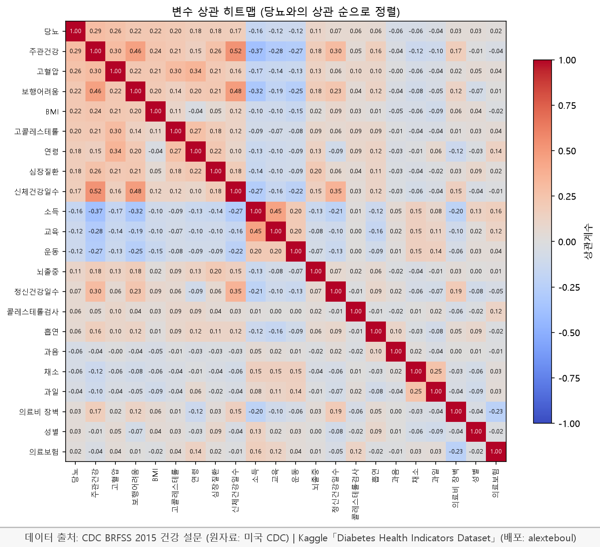
당뇨와의 상관 상위 10개
| 순위 | 변수 | r | 순위 | 변수 | r |
|---|---|---|---|---|---|
| 1 | GenHlth | +0.294 | 6 | Age | +0.177 |
| 2 | HighBP | +0.263 | 7 | HeartDiseaseorAttack | +0.177 |
| 3 | DiffWalk | +0.218 | 8 | PhysHlth | +0.171 |
| 4 | BMI | +0.217 | 9 | Income | -0.164 |
| 5 | HighChol | +0.200 | 10 | Education | -0.124 |
강한 상관(|r| ≥ 0.30) 짝은 총 10개입니다. 대표적으로 GenHlth–PhysHlth 0.52, PhysHlth–DiffWalk 0.48, GenHlth–DiffWalk 0.46, Education–Income 0.45, GenHlth–Income -0.37 등이 있습니다. 최강 짝이 0.52여서 다중공선성 우려는 크지 않습니다.
상관은 인과를 뜻하지 않습니다. 과음과 당뇨의 음의 상관(-0.06)은 연령 교란의 예로 설명됩니다.
보고서에 정리된 결과 요약
고혈압이 가장 큰 단일 신호입니다. 보유군 당뇨율 24.4%, 미보유군 6.0%로 약 4.1배 차이이며 고콜레스테롤도 약 2.8배입니다.
주관 건강 상태가 상관 1위입니다. GenHlth 상관은 0.294이며, “매우 나쁨” 구간은 37.9%, “매우 좋음” 구간은 2.5%입니다.
사회경제 격차가 관찰됩니다. 소득 하위 두 구간은 약 25%, 최상위는 8.0%입니다. 교육도 같은 방향이며 행동 요인보다 격차가 큽니다.
위험 요인이 겹칠수록 비율이 상승합니다. 중첩이 0개일 때 약 5%, 6개일 때 30% 이상입니다.
해석에 주의해야 합니다. 과음자 당뇨율이 5.8%로 낮게 보이는 것은 연령 교란으로 설명되며, Age 같은 코드 변수를 실제 값으로 해석하지 않습니다.
다음 단계로 넘긴 사항
코드 변수 — Age(1 = 18~24세, 13 = 80세 이상), GenHlth(1 = 매우 좋음, 5 = 매우 나쁨) 등은 구간 번호입니다. 값이 작을수록 더 젊거나 건강한 방향입니다.
모델링으로 전달한 사항
자료 출처: 제공된 EDA 자료 · CDC BRFSS 2015 건강 설문(원자료: 미국 CDC) · Kaggle Diabetes Health Indicators Dataset(배포: alexteboul).
무작위 기준선 0.139의 약 3배
HistGradientBoosting · 오경보 12,927명
같은 운영점에서의 정밀도
18~39세 사각지대
무엇을, 누구를 위해, 어떻게 평가하는가
| 항목 | 내용 |
|---|---|
| 누가 사용하는가 | 건강검진 · 보험 · 헬스케어 서비스 운영자. 진단 기관이 아닌 선별 주체입니다. |
| 무엇을 예측하는가 | 설문 응답 21개 지표로 당뇨 여부를 예측하는 이진 분류입니다. |
| 왜 필요한가 | 당뇨를 늦게 발견할 때의 비용(합병증 · 치료 기간)이 선별 비용(혈액검사 1회)보다 수십 배 큽니다. 조기 선별로 발견 시점을 앞당기는 것이 목적입니다. |
| 어떻게 평가하는가 | 양성 비율 13.9%의 불균형 자료이므로 정확도를 배제하고 PR-AUC를 우선한 뒤 리콜과 ROC-AUC를 함께 봅니다. 운영점은 리콜 80% 보장 지점으로 정했습니다. |
불균형 자료 — 무작위 예측의 PR-AUC 기준선은 양성 비율인 0.139입니다. PR-AUC는 고위험군을 상위에 집중하는 효율을 엄격하게 측정합니다.
정확도 함정 확인 — 전부 정상으로 예측하는 기준선은 정확도 86.1%지만 리콜은 0입니다. 정확도만으로는 당뇨 응답을 찾지 못하는 모델을 좋게 평가할 수 있습니다.
선별 비용 구조 — 놓침(FN)의 비용이 오경보(FP) 후속 검사 비용보다 수십 배 큽니다. 그래서 리콜을 우선하고 정밀도는 후속 검사로 보완하는 운영 기준을 선택했습니다.
분할 · 비교 모델 · 채택 기준
| 항목 | 설정 |
|---|---|
| 분할 | 학습 80% / 테스트 20% 층화 분할, random_state=42. 테스트셋은 최종 평가에만 사용 |
| 비교 모델 | 전부 정상 기준선 · 표준화 및 class_weight="balanced" 로지스틱 회귀 · HistGradientBoosting |
| 채택 기준 | 정확도 배제 → PR-AUC 우선 → 리콜 → ROC-AUC. HistGradientBoosting이 주요 지표에서 우세해 채택 |
| 모델 | 정확도 | 정밀도 | 리콜 | F1 | ROC-AUC | PR-AUC |
|---|---|---|---|---|---|---|
| 기준선 (전부 정상) | 0.861 | 0.000 | 0.000 | 0.000 | 0.500 | 0.139 |
| 로지스틱 회귀 | 0.732 | 0.311 | 0.761 | 0.441 | 0.820 | 0.393 |
| HistGradientBoosting (채택) | 0.719 | 0.305 | 0.797 | 0.441 | 0.827 | 0.423 |
HistGradientBoosting은 PR-AUC 0.423으로 무작위 수준 0.139의 약 3배이며 리콜은 79.7%입니다. 로지스틱 회귀보다 정확도는 낮지만 리콜 · ROC-AUC · PR-AUC가 높습니다. 기준선은 정확도가 86.1%여도 양성 응답을 전혀 찾지 못합니다.
| 기준선 · 모델 | 정확도 | 정밀도 | 리콜 | ROC-AUC | PR-AUC |
|---|---|---|---|---|---|
| 전부 정상 예측 | 0.861 | 0.000 | 0.000 | 0.500 | 0.139 |
| 규칙 1개 — 고혈압이면 당뇨 | 0.641 | 0.244 | 0.751 | 0.687 | 0.218 |
| 변수 1개 — 주관 건강 로지스틱 | 0.861 | 0.000 | 0.000 | 0.729 | 0.262 |
| HistGradientBoosting (채택) | 0.719 | 0.305 | 0.797 | 0.827 | 0.423 |
HistGradientBoosting은 고혈압 단일 규칙보다 리콜이 4.6%p 높고 PR-AUC는 약 2배입니다.
용도에 따라 나눈 두 개의 판정선
| 운영 기준 | 임계값 | 정확도 | 정밀도 | 리콜 | F1 |
|---|---|---|---|---|---|
| 리콜 80% 보장 | 0.498 | 0.717 | 0.304 | 0.800 | 0.441 |
| F1 균형 | 0.649 | 0.804 | 0.376 | 0.620 | 0.468 |
리콜 80% 운영점에서 당뇨 응답 7,069명 중 5,651명을 찾고 1,418명을 놓칩니다. 오경보는 12,927명입니다. F1 균형점을 선택하면 정밀도가 높아지는 대신 리콜이 62.0%로 낮아집니다.
단일 판정선이 만든 사각지대
| 연령대 | 당뇨 비율 | 리콜 | 정밀도 |
|---|---|---|---|
| 18~29세 | 1.6% | 30.2% | 30.2% |
| 30~39세 | 4.3% | 40.5% | 29.2% |
| 40~49세 | 7.5% | 63.2% | 25.3% |
| 50~59세 | 12.6% | 75.5% | 29.8% |
| 60~69세 | 19.0% | 85.3% | 33.2% |
| 70세 이상 | 20.6% | 85.2% | 29.2% |
18~39세 리콜은 30~41%로 낮아 연령대별 사각지대가 관찰됩니다. 모델 전체 리콜만으로는 이 차이를 알기 어렵습니다.
보고서에 정리된 항목
| 한계 | 개선 방향 |
|---|---|
| 청년층(18~39세) 리콜 30~41% — 단일 판정선의 사각지대 | 연령 보정 임계값을 검토하고 청년층 전용 기준을 마련합니다. |
| 확률 눈금이 위로 부풀어 있음 — 평균 예측 0.376, 실제 양성 비율 0.139 | Platt 재보정을 검토합니다. 순위 · 성능은 유지되고 확률 숫자의 신뢰성이 개선됩니다. |
| PR-AUC 약 0.42로 임상 진단 도구 수준이 아님 | 진단이 아닌 1차 선별 용도로만 사용하고, 양성은 HbA1c 혈액검사로 확인하도록 제안합니다. |
| 큰 오차에 당뇨인이 1.9배 밀집 — 25.8% 대 전체 유병률 13.9% | 가족력 등 추가 문항을 수집해 정보 부족과 놓침 원인을 살펴봅니다. |
| 자기기입 설문으로 측정 오차가 있을 수 있음 | HbA1c 실측을 결합해 검증합니다. |
| 2015년 미국 자료이므로 현재 적용에 주의가 필요함 | BRFSS 연간 조사 자료와 2005~2024 당뇨 예측용 정리 데이터셋을 후속 확인 대상으로 제시합니다. |
| 유전 · 가족력 문항 부재 | 추가 문항을 결합해 젊고 건강해 보이는 당뇨 응답을 놓치는 문제를 살펴봅니다. |
| 지역(주) 및 설문 가중치 제거 | 주 코드가 포함된 원본을 확보해 지역별 분석과 가중 보정을 검토합니다. |
| 전당뇨 1.8%가 정상에 섞임 | diabetes_012를 이용한 3단계 분류로 확장합니다. |
| 관찰 자료이므로 인과를 단정할 수 없음 | 오즈비 · PDP는 연관으로 해석하고 개입 효과는 별도로 검증합니다. |
모델의 위치와 제안
모델은 진단 도구가 아니라 설문 기반 1차 선별 분석입니다. 다음 세 가지를 다음 단계로 제안합니다.
설문 21문항 기반 1차 선별 도구로 검토합니다. 리콜 80% 운영점의 양성은 HbA1c 확인을 권고합니다.
청년층 리콜 격차를 줄이기 위해 연령 보정 임계값과 청년층 전용 기준을 검토합니다.
확률 재보정, 가족력 문항과 혈액검사 결합으로 확률 신뢰성과 정보 부족을 개선합니다.
출처: 제공된 모델링 결과보고서의 결과 · 표 · 설명. 데이터 출처 표기는 CDC BRFSS 2015 설문 및 Kaggle Diabetes Health Indicators Dataset입니다.
불균형 자료의 기준선
HistGradientBoosting
무작위 0.139의 3배
임계값 0.498 운영점
주장과 핵심 수치, 실무 제안
| # | 인사이트 | 핵심 수치 | 실무 제안 |
|---|---|---|---|
| 1 | 정확도는 KPI가 아니다 | 기준선 정확도 86.1% / 리콜 0 | 성과지표를 리콜 · PR-AUC로 재정의 |
| 2 | 설문 21문항으로 당뇨 80% 조기 선별 | ROC-AUC 0.827 · PR-AUC 0.423 | 1차 선별 질문지 → 혈액검사 권고 |
| 3 | 관리 우선순위는 비만 · 주관건강 · 고혈압 | 중요도 BMI 0.079 / GenHlth 0.075 | 복합 관리 프로그램 타깃 |
| 4 | 청년층은 별도 운영 기준이 필요하다 | 18~29세 리콜 30.2% vs 70세 이상 85.2% | 연령 보정 판정선 |
| 5 | 소득 격차는 취약계층 사업의 근거 | 하위 2구간 약 25% vs 최상위 8.0% | 검진 접근성 우선 배분 |
| 6 | 오경보는 비용이 아니라 기회다 | FP 12,927명 — 프로파일이 TP와 유사 | 양성자 = 검사 + 생활 코칭 |
| 7 | 판정선은 용도별로 두 개를 둔다 | 0.498(리콜 80%) / 0.649(정밀도 37.6%) | 용도별 이중 운영점 |
주장 · 근거 수치 · 실무 제안
주장 — 당뇨 유병률 13.9% 같은 불균형 문제에서 정확도를 성과지표로 쓰면 “무능한 모델”이 “우수한 모델”로 보입니다.
| 모델 | 정확도 | 리콜 | PR-AUC |
|---|---|---|---|
| 기준선 (전부 정상 찍기) | 0.861 | 0.000 | 0.139 |
| HistGradientBoosting | 0.719 | 0.797 | 0.423 |
정확도는 낮아도 당뇨 10명 중 8명을 잡는 모델이 실전에서 쓸모가 있습니다. 성과지표를 리콜 · 정밀도 · PR-AUC로 재정의하고, “모델 정확도 86%” 같은 보고가 나오지 않도록 지표 정의를 먼저 고정합니다.
주장 — 병원에 가기 전 설문 단계에서 이미 당뇨 고위험군을 걸러낼 수 있습니다. 검사가 아니라 선별 질문지가 상품입니다.
“지목된 3명 중 1명이 실제 당뇨” 수준입니다. 건강검진 안내 · 보험 가입 설문에 21문항 선별 점수를 넣고, 상위권에 혈당검사(HbA1c)를 권고하는 2단 파이프라인(설문 → 혈액검사)을 제안합니다.
주장 — 예측을 지배하는 변수는 생활 습관이 아니라 대사 지표와 주관 건강 인식입니다.
순열 중요도(PR-AUC 하락 폭) 기준입니다.
오즈비(1 SD당)는 GenHlth +86%, BMI +63%, HighBP +44%입니다. 위험 요인 중첩은 0개 약 5%에서 6개 30% 이상으로 급등합니다. 비만(BMI)과 고혈압을 함께 가진 사람을 복합 관리 프로그램의 최우선 타깃으로 두고, “스스로 건강하다고 생각하십니까?” 한 문항만으로도 강한 신호를 얻을 수 있습니다. PDP상 BMI 35 이상에서 확률이 0.52로 정체하므로 초고체중군은 임상 개입 위주로 봅니다.
주장 — 단일 판정선은 유병률이 높은 고령층에 최적화되어 청년층 당뇨의 절반 이상을 놓칩니다.
유병률은 1.6%에서 20.6%로 13배 차이입니다. 놓친 당뇨(FN 1,418명)는 젊고(BMI 27.7) 고혈압이 없는(38%) 프로파일입니다. 젊을수록 판정선을 낮추는 연령 보정 판정선과 청년층 대상 캠페인을 제안합니다.
주장 — 당뇨율 차이는 개인 습관만으로 설명되지 않습니다. 소득이 대표하는 생활 조건이 경로이며 정책 개입 지점이 됩니다.
| 소득 하위 2구간 당뇨율 | 약 25% |
| 최상위 구간 | 8.0% |
| 생활 요인으로 설명되는 격차 | 47% |
| 동일 BMI 내 잔존 격차 | 11.7~18.6%p |
| 의료비 장벽 경험률 (하위 / 상위) | 21.4% / 3.0% |
경로 분해에서 소득 단독 계수는 -0.429였고, 생활 요인(BMI · 운동 · 고혈압 · 흡연 · 의료장벽)을 보정한 뒤에도 -0.225가 남았습니다. 소득 하위 구간에 무료 검진과 방문 상담을 우선 배분하고, “의료비 때문에 진료를 못 받았다”는 응답자를 위한 장벽 해소 프로그램을 검토합니다.
주장 — FP 12,927명은 실패가 아니라 전당뇨 · 대사증후군 고위험군 후보입니다.
| 프로파일 | TP (포착) | FP (오경보) |
|---|---|---|
| 평균 BMI | 32.9 | 31.2 |
| 고혈압 비율 | 84% | 76% |
| 주관 건강 평균 | 3.5 | 3.2 |
FP 프로파일이 TP와 거의 같습니다. 이 데이터의 “정상”에는 전당뇨 1.8%가 섞여 있어 FP 일부는 실제 전당뇨일 가능성도 있습니다. 양성 판정자에게 “혈당검사 + 생활습관 코칭”을 묶음으로 제공하고, FP 전환율(검사 수검률)을 선별 사업의 KPI로 관리합니다.
주장 — 판정선은 정답이 아니라 비용 선택입니다. 저비용 조치에는 리콜 우선, 고비용 조치에는 정밀 우선입니다.
| 운영점 | 임계값 | 정밀도 | 리콜 |
|---|---|---|---|
| 리콜 80% 보장 | 0.498 | 30.4% | 80.0% |
| F1 균형 | 0.649 | 37.6% | 62.0% |
캘리브레이션상 0.498은 실제 눈금 0.142로 전체 평균 위험과 비슷합니다. “평균 이상 위험자를 양성으로 본다”는 선별 논리와 일치합니다. 리마인드 · 알림 같은 저비용 조치에는 0.498, 코칭 배정 · 캠페인 같은 고비용 조치에는 0.649를 씁니다. 확률을 숫자로 보고할 때는 재보정된 눈금을 사용합니다(원 눈금 평균 0.376 vs 실제 0.139).
즉시 · 단기 · 중기 조치
| 시기 | 조치 | 관련 인사이트 |
|---|---|---|
| 즉시 | 리마인드 발송에 0.498 운영점 적용(리콜 80%), KPI를 리콜 · PR-AUC로 고정 | ① ② ⑦ |
| 단기 (3개월) | 연령 보정 판정선 도입, 양성자 검사 + 코칭 묶음 제공, FP 수검률 모니터링 | ④ ⑥ ⑦ |
| 중기 (6~12개월) | 가족력 등 추가 문항 수집, 혈액검사 실측 결합 검증, 2005~2024 BRFSS 최신 데이터로 갱신 | ③ ④ ⑤ |
한 줄 정리 — 설문 21문항만으로 당뇨 응답 10명 중 8명을 찾는 1차 선별 도구를 만들 수 있습니다. 단, 확진이 아니라 검사 권고로 씁니다.
출처: 제공된 비즈니스 인사이트 보고서. 수치와 해석은 해당 보고서에 기재된 범위로 한정했습니다. 데이터 출처: CDC BRFSS 2015 건강 설문 · Kaggle Diabetes Health Indicators Dataset(배포: alexteboul).
아래 자료는 데이터 자료의 각 페이지를 이미지로 담았습니다. 그래프에 표시된 축 · 범례 · 출처 표기도 원본 그대로 유지했습니다.
자료 출처 표기: CDC BRFSS 2015 건강 설문 및 Kaggle Diabetes Health Indicators Dataset — 원본에 표시된 출처.
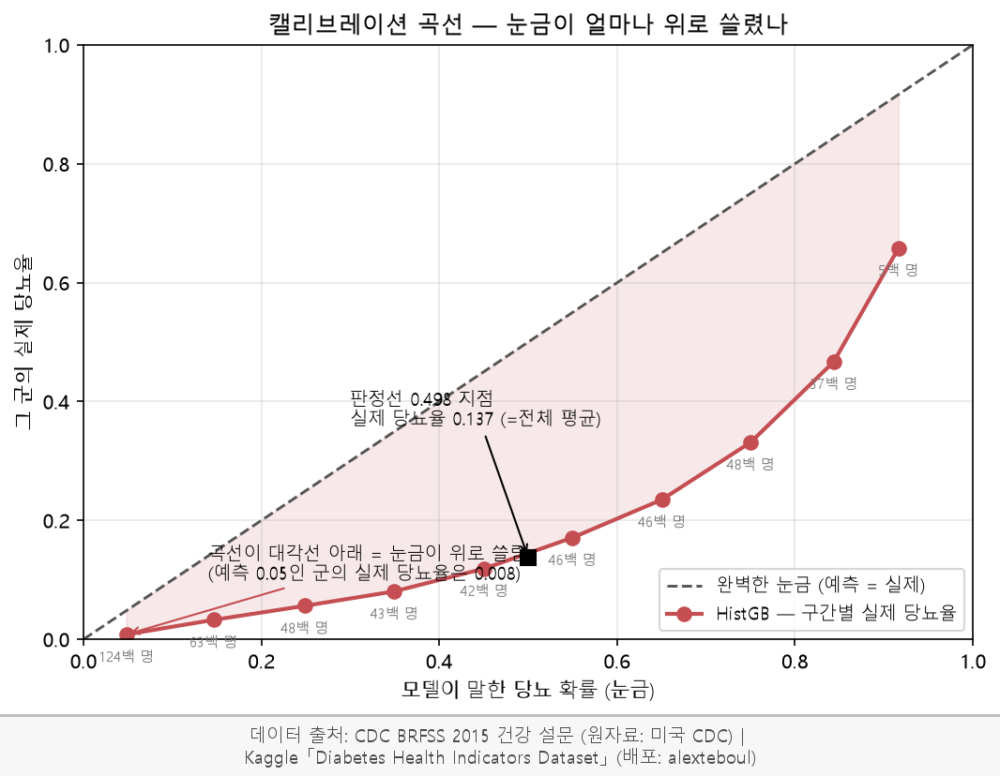
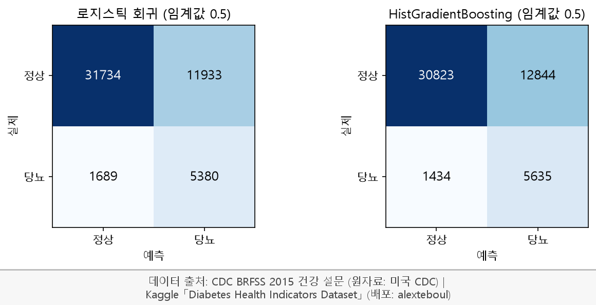

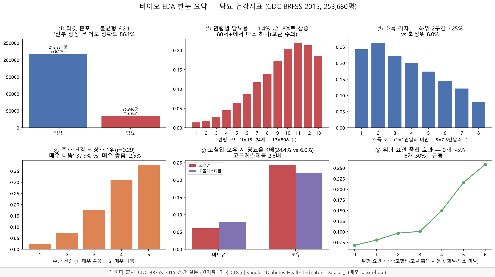
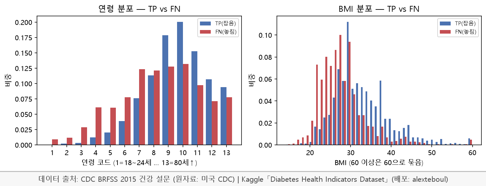
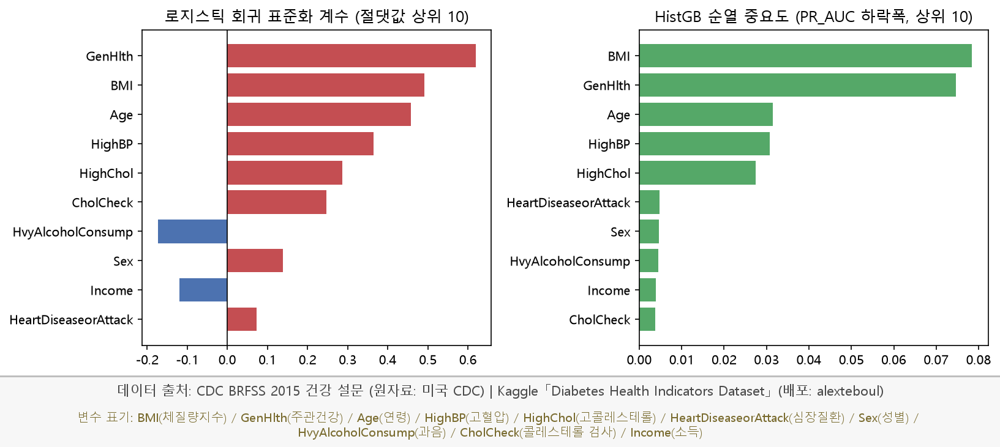
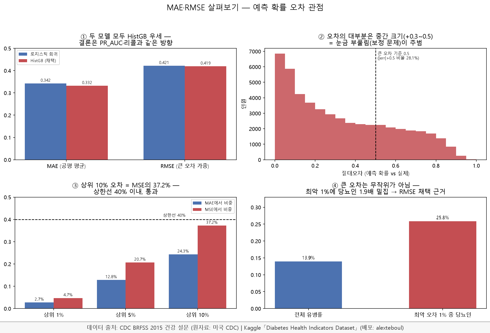
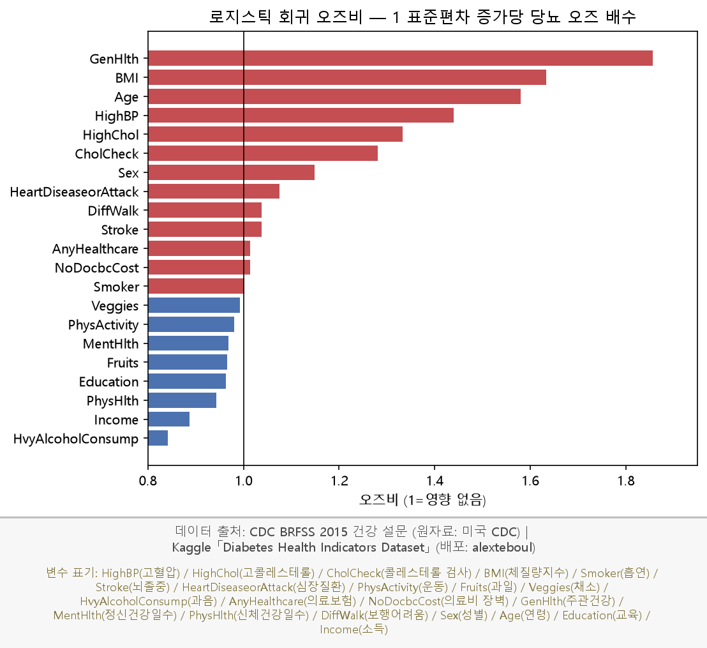
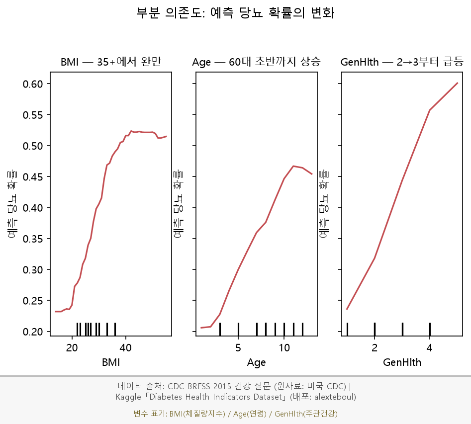
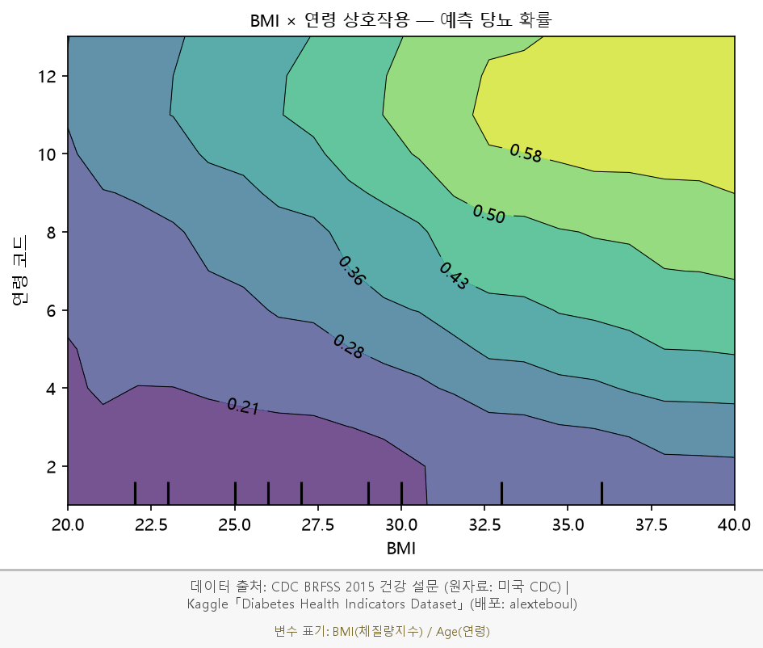
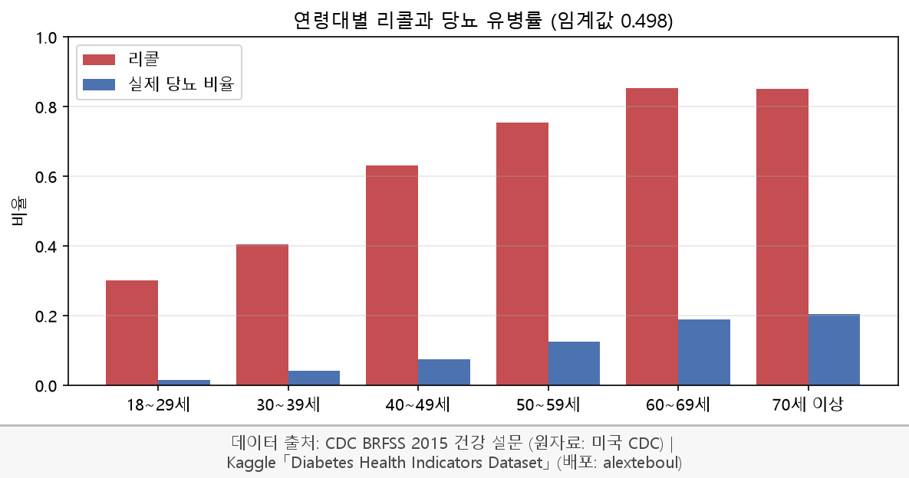
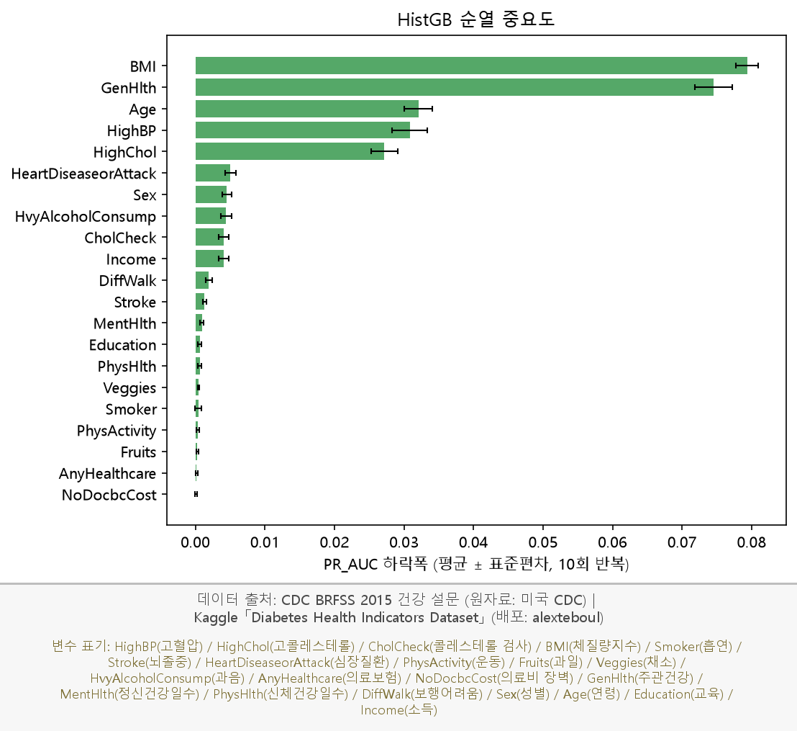
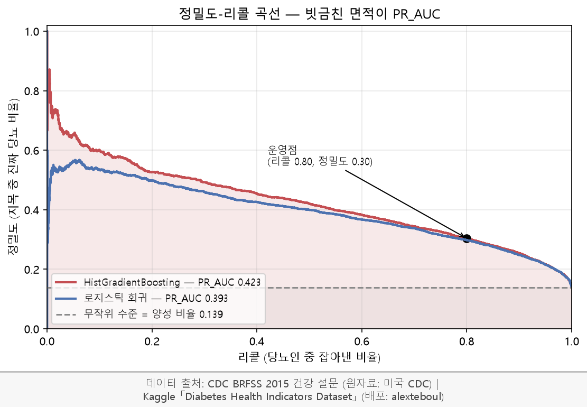
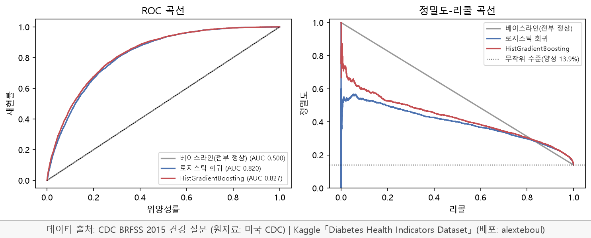
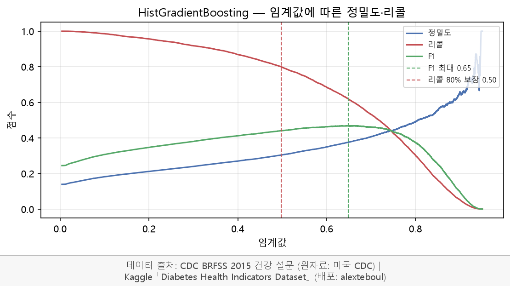
그림 출처: 제공된 데이터 자료 · CDC BRFSS 2015 건강 설문 · Kaggle Diabetes Health Indicators Dataset.
분석에 사용한 원자료와 배포본
미국 질병통제예방센터(CDC)의 Behavioral Risk Factor Surveillance System(BRFSS) 연례 조사 자료입니다.
CDC BRFSS Annual Survey Data게시자 alexteboul. BRFSS 2015 자료를 당뇨병 건강 지표 분석에 활용하도록 가공한 데이터셋입니다.
Kaggle 데이터셋 페이지분석 데이터의 맥락과 변수 정의는 원자료인 CDC BRFSS 자료와 함께 확인하는 것이 좋습니다.
후속 확인에 사용한 자료
GitHub 사용자 spandanjit2005의 2005~2024 BRFSS 연례 자료 처리 및 코드 저장소입니다. 자료에서는 3개 범주의 당뇨 타깃을 사용하며, 2015 Kaggle 데이터와는 별도의 파생 프로젝트임을 구분하도록 안내합니다.
GitHub 저장소연도별 BRFSS 자료와 기술 문서를 확인할 때 사용합니다.
CDC 연례 조사 자료대한당뇨병학회가 제공하는 국내 당뇨병 현황 자료입니다. 원문은 2025년 1월 15일 정정 안내를 표시하고 있습니다.
Diabetes & Metabolism Journal 자료 페이지비교와 인용에서 확인할 것
미국 BRFSS 설문과 한국 당뇨병 현황 자료는 모집단과 조사 방법이 다릅니다. 두 자료를 직접 비교할 때는 정의 · 연령 기준 · 조사 연도를 함께 확인해야 합니다.
이 대시보드의 모든 수치는 2015년 미국 성인 자기기입 설문에 기반한 관찰 결과이며, 개인 진단이나 인과 해석에 사용할 수 없습니다.
본 페이지 내용은 제공된 참고자료에 기재된 범위입니다.